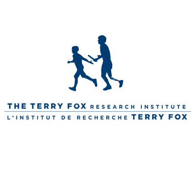
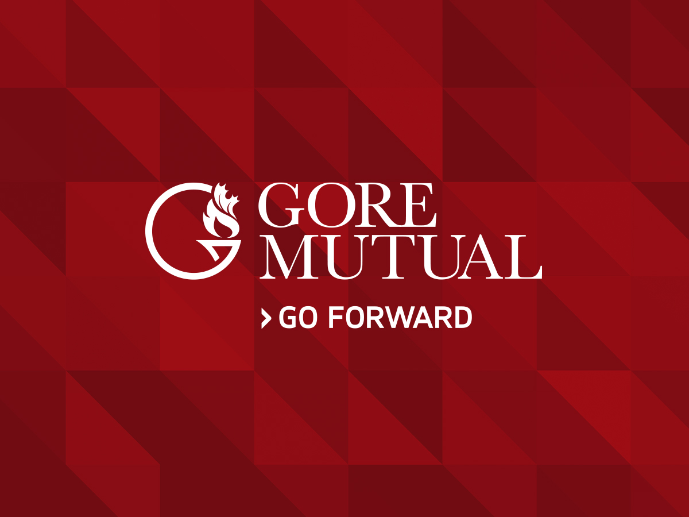
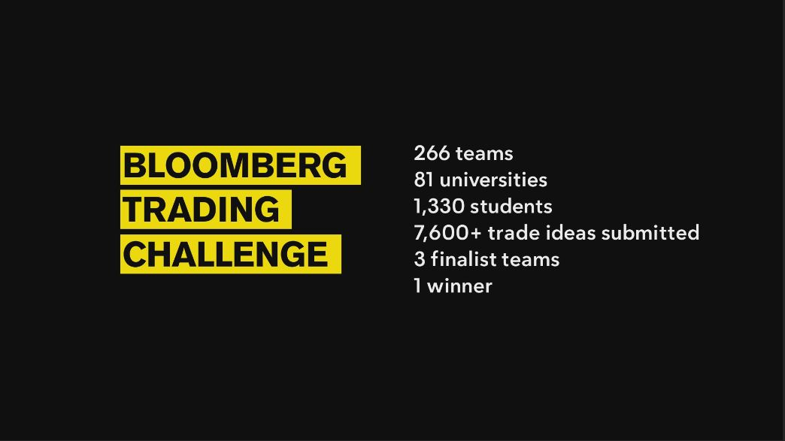
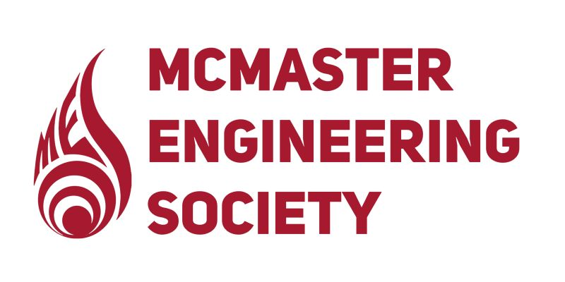
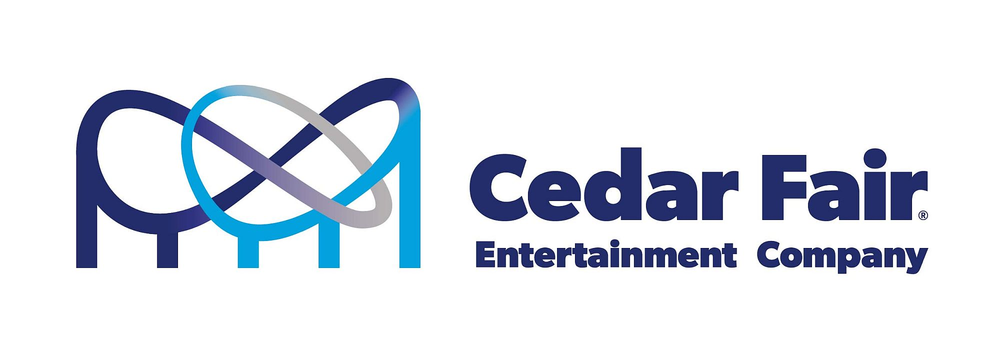
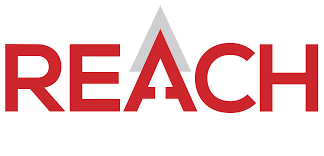
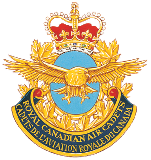

Terry Fox Cancer Research, Toronto, ON
Project Coordinator | May 2024 - Aug 2024
- Fostered clear communication across the team, reducing deadline misses by 20%, showcasing leadership in maintaining project timeliness and efficiency.
- Increased productivity by 15% by strategically matching tasks to team members' skills, demonstrating a deep understanding of individual strengths and effective team management.
- Expedited the QA process while maintaining a 98% quality rate, underscoring a commitment to delivering high-quality products within stringent timelines.
- Managed stakeholder relations effectively, accelerating project approval by 25% through proactive communication and negotiation, highlighting the ability to engage and align key partners with project goals.

Gore Mutual Insurance, Toronto, ON
Associate Software Engineer | May 2021 - Aug 2023
- Enhanced productivity by initiating peer brainstorming sessions, reducing debugging time by 20% through collaborative problem-solving and knowledge sharing.
- Implemented best practices in system architecture and maintenance, achieving 99% system uptime and ensuring robust and reliable operations.
- Optimized application performance by refining code efficiency and leveraging advanced algorithms, reducing load times by 25%, which significantly improved user experience.
- Developed a high-performance Angular application, incorporating user feedback to increase engagement by 40% and drive customer satisfaction.
- Led a complex data migration project, utilizing meticulous planning and execution strategies to achieve a 95% accuracy rate, ensuring data integrity and seamless transition.
Deep-Space Analogue Research Expedition (DARE), Hamilton, ON
Software Team Lead | Dec 2022 - Jul 2023
- Fostered clear communication across the team, reducing deadline misses by 20%, showcasing leadership in maintaining project timeliness and efficiency.
- Increased productivity by 15% by strategically matching tasks to team members' skills, demonstrating a deep understanding of individual strengths and effective team management.
- Expedited the QA process while maintaining a 98% quality rate, underscoring a commitment to delivering high-quality products within stringent timelines.
- Managed stakeholder relations effectively, accelerating project approval by 25% through proactive communication and negotiation, highlighting the ability to engage and align key partners with project goals.

Bloomberg Trading Challenge, New York, NY
Team Lead/Data Analyst | Jan 2021 - Apr 2021
- Led competitive efforts in a simulated trading environment.
- Engineered and graphically represented Data Frames of the S&P 500 index using Python.
- Conducted advanced quantitative analysis, writing custom Python scripts to extract, process, and interpret complex financial data, enhancing our trading decisions.
- Designed and presented data visualizations that clearly communicated investment impact and growth trends, contributing to strategic decisions that improved our portfolio performance.

McMaster Engineering Society, Hamilton, ON
First Year Rep | Sep 2020 - Dec 2021
- Elected by the student body to advocate on their behalf.
- Collaborated on program reports submitted to the board.
- Guided tours and answered questions for prospective students and parents.
- Represented university values at campus events.
- Maintained communication with students through public gatherings and events.
- Developed strong organizational skills through group projects.
- Used analytical skills to solve challenging problems.
- Showed initiative and creativity in tackling difficult tasks.

Cedar Fair Entertainment Company, Vaughan, ON
Ride Operator | Jun 2020 - Nov 2020
- Ensured safety by engaging devices and monitoring rides.
- Resolved guest issues by collaborating with supervisors.
- Operated various rides, ensuring passenger safety.
- Trained new operators on safety and ride procedures.
- Conducted daily ride inspections for functionality and safety.
- Enhanced customer service by providing directions and assistance.
- Exceeded job requirements to improve service.
- Developed strong customer service and product knowledge skills.

REACH, Toronto, ON
Coding Camp Councillor | Mar 2020 - Sep 2020
- Communicated with parents about camper activities and concerns.
- Led groups of children through camp activities.
- Worked with children of varying ages and skill levels.
- Created and implemented engaging lesson plans.
- Applied innovative teaching methods to meet learning objectives.
- Graded quizzes and projects to provide feedback.
- Evaluated student performance and provided progress reports.
- Developed semester outlines and instructional plans.

Air Cadets, Veteran Support
Flight Sergeant - 2nd Year Level 5 - Senior - Mentor | Sep 2016 - Sep 2021
- Achieved Glider Pilot License through rigorous training and practical flight experience.
- Organized and led various community service events such as Poppy Campaign and Remembrance Day Ceremonies.
- Developed leadership skills by mentoring younger cadets and teaching aviation principles, survival skills, drill and drill.
- Managed and coordinated events like Rotary for Kids Against Hunger, field training exercises, sports days, team building events, and community clean-ups.
- Participated in advanced training courses, including aviation, survival and marksmanship.
- Provided support and assistance at events like the Robby Burns Dinner, fostering community relations.